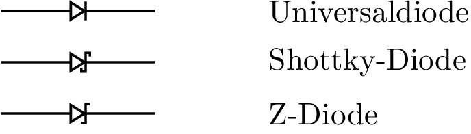

4 IV-Charakterisierung von Siliziumdioden
4.1 Zielsetzung
Ziel dieses Laborversuchs ist es, Strom- (I) und Spannungs- (V, eigentlich U) eigenschaften zwei verschiedener Siliziumdiode vom Typ 1N4001 und 1N4148 zu untersuchen. Parallel zu Messungen mit dem Red Pitaya STEMlab soll die Schaltung vollständig mit SPICE (LTspice, ngspice) simuliert werden, so dass Messdaten vom STEMLab auf dem eigenen Rechner verglichen (validiert) werden können.
Hinweis. In diesem Laborversuch wird die Terminologie aus der Dokumentation verwendet, wenn es um Verbindungen zum Red Pitaya STEMlab geht.
Die Erweiterungsstecker-Pins für die Spannungsversorgung -3.3 V und +3.3 V sind in der Dokumentation dargestellt.
Die Oszilloskop und Signalgenerator App wird zum Erzeugen und Beobachten von Signalen in der Schaltung verwendet, wenn der Web-Server des STEMlab’s aktiviert ist.
4.2 Hintergrund
Eine Halbleiterdiode ist ein elektronisches Bauelement, welches häufig in Schaltungsanwendungen, bei denen der Strom nur in eine Richtung fliessen darf, als Gleichrichtung eingesetzt wird.
Wenn die Diode aus Silizium hergestellt wird, liegt die Durchlaßspannung typischerweise bei \(\approx\) 0.7 V und die IV-Charakteristik im Bezug auf Diodenstrom und -spannung kann durch eine exponentielle Beziehung beschrieben werden:
\[\begin{equation} I_D = I_S \left( e^{\frac{V_D }{N V_T}} - 1 \right) \end{equation}\]
wobei \(I_{S}\) der Sättigungssperrstrom ist, \(N\) ein Skalierungsfaktor, genannt Emissionskoeffizient, ist und \(V_T = kT / q\) die sogenannte thermische Spannung ist, die bei Raumtemperatur (\(T\)=300 K) 25,4 mV beträgt.
4.3 Schematische Symbole der Diode
Jeder Diodentyp hat ein spezifisches Schaltsymbol, welches vom herkömmlichen Diodensymbol der Siliziumdiode abgeleitet ist, vgl. Abbildung 4.1 . Eine Z-förmige Kathode bezeichnet eine Zener-Diode, wie im zweiten Symbol von links in Abbildung 4.1 zu sehen ist. Eine S-förmige Kathode bezeichnet eine Schottky-Diode und Pfeile, die von der Diode wegzeigen, kennzeichnen eine LED (Light Emitting Diode, engl.), wie im rechten Symbol dargestellt. Pfeile, die auf die Diode zeigen, kennzeichnen eine Photodiode.

4.4 Materialien
- Red Pitaya’s STEMlab
- 10 \(\Omega\) Widerstand
- Diode 1N4148
- Diode 1N4001
- Platine
4.5 IV-Charakteristik
Die Strom- und Spannungseigenschaften der pn-Übergangsdiode können mit dem STEMlab und den in Abbildung 4.2 dargestellten Anschlüssen gemessen werden. Richten Sie die Steckplatine mit dem Generator OUT1-Kanalausgang an einem Ende des Widerstandes ein. Das andere Ende des Widerstandes ist mit einem Ende der zu messenden Diode verbunden, wie im Diagramm dargestellt. Die Eingangskanäle IN1 und IN2 sind ebenfalls unterschiedlich angeschlossen, daher werden Diodenstrom und -spannung:
\[\begin{align} I_D &= (IN_1 - IN_2) / R_1 \\ V_D &= IN_2 \end{align}\]


Zur Messung der Strom- und Spannungseigenschaften einer Siliziumdiode sollte der OUT1-Generator als 1 kHz-Dreieckssignal mit einer maximalen Amplitude von 1 V und einer minimalen Amplitude von 0 V konfiguriert werden. Für die Messung der Strom-Spannungskurve (IV-Kurve) ist ein zweidimensionaler Graph (xy-Graph/Plot) erforderlich, wobei die x-Achse die Diodenspannung an IN2 und die y-Achse den Diodenstrom \(I_D = (IN1-IN2)/R1\) darstellen.
4.6 Zeitbereichsmessungen
NIEMALS UNTERSCHIEDLICHE ZUGRIFFSARTEN / MESSVERFAHREN PARALLEL VERWENDEN.
NICHT MIT ZWEI ODER MEHREREN RECHNERN ZUM MESSEN AUF DAS STEMLAB ZUGREIFEN.
Greifen Sie nur von einem Rechner aus auf das STEMlab zu und deaktivieren Sie die aktuell nicht genutzte Methode, bspw. Oszilloskop-App (OFF-Button), bevor Sie den Zugriff via JupyterLab oder SCPI erproben.
4.6.1 Messungen mit der STEMlab Oszilloskop-App
URLs der STEMLabs für den Zugriff via Web-Server aus dem VPN der HSB

Die Schaltung aus Abbildung 4.2 ist für Sie auf einer Platine aufgebaut und wird via SMA-Verbindern an das STEMlab angeschlossen.
Loggen Sie sich mit vorzugsweise mit Google Chrome oder Mozilla Firefox auf dem STEMlab an ihrem Laborplatz ein und starten Sie die Oszilloskop- und Signalgenerator-App.
Stellen Sie auf der rechten Seite im Menü bei OUT1 (Generator) den Amplitudenwert auf 0,5 V und den DC-Offset auf 0,5 V ein. Um ein Dreieckssignal als Eingangsspannung anzulegen wählen Sie im Waveform-Menü die Signalform “TRIANGLE” und aktivieren den Ausgang mit “ON”. Der “SHOW”-Button dient zum Anzeigen des Signals in der Oszilloskop-App.
Stellen Sie sicher, dass sowohl IN1 V/div als auch IN2 V/div am linken unteren Bildschirmrand auf 200 mV/div eingesetellt sind. V/div können Sie im jeweiligen Kanal über die +/- Schaltflächen rechts unten kontrollieren.
Setzen Sie den t/div-Wert auf 200 us/div. Auch hier können Sie t/div mit den +/- Schaltflächen einstellen.
Im Menü “MATH settings” stellen Sie die Differenz IN1-IN2 ein und aktieren diese wurch setzen des “ENABLE” Buttons. Die mathematische Kurve skaliert mit dem Faktor R1 und stellt den Diodenstrom dar.

In Abbildung 4.5 kann man sehen, dass die Diode zu leiten beginnt, wenn die Diodenspannung die Schwellenspannung von ca. 0.7 V erreicht.
Außerdem sollte der mit “MATH-Trace” dargestellte Diodenstrom beobachtet werden. Man sollte deutlich erkennen, dass der Diodenstrom 0 A beträgt, sobald die Diodenspannung unter 0.7 V liegt. Ab einem Zeitpunkt, ab dem die Diodenspannung größer 0.7 V ist, beginnt die Diode zu leiten und der Strom wird nur durch den Widerstand \(R_1\) begrenzt.
4.6.2 Messungen mit SCPI-Server und Python
Wie das STEMlab mittels SCPI zu steuern ist, sehen Sie bitte hier:
Code-Beispiele finden Sie im Repositorium:
IP-Adressen der STEMLabs für den Zugriff via SCPI
- Laborplatz ELIE1: 192.168.111.181
- Laborplatz ELIE2: 192.168.111.182
- Labroplatz ELIE3: 192.168.111.183
- Laborplatz ELIE4: 192.168.111.184
- Laborplatz ELIE5: 192.168.111.185
- Laborplatz ELIE6: 192.168.111.186